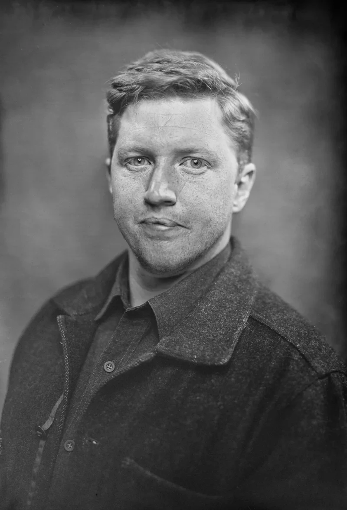
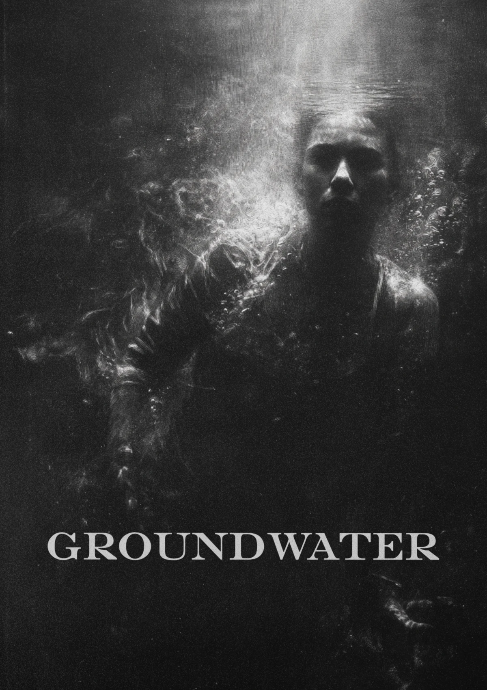
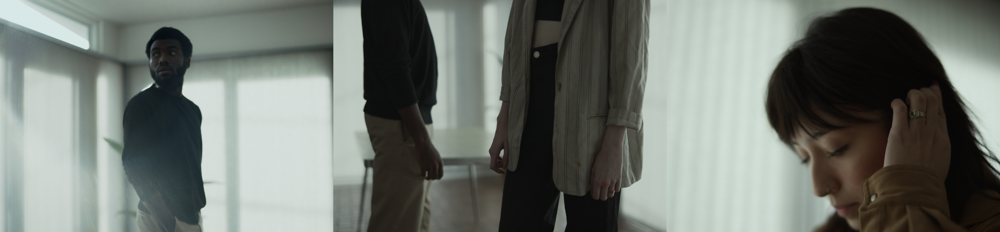
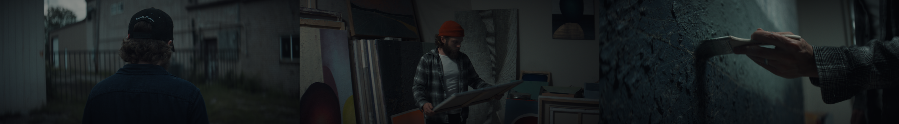
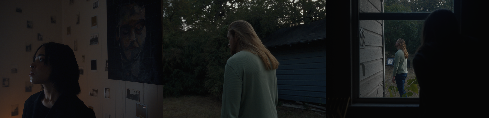

Alec Wisdom
Writer & Director
Born and raised in Fort Worth, Texas.
Telling stories about the unseen.
From a family built by trades.
I found filmmaking through music. As a producer, I accumulated millions of streams within a community of like-minded artists—a foundation that taught me why strong relationships & unified technical systems allow creative work to flourish.
I began working in film as a cinematographer on travel jobs nationwide, then moved into gaffer & lighting technician roles on larger productions. I am fluent across the imaging pipeline: acquisition, lighting design, cinematography, & color management. My credits include Yellowstone: 1883, The Chosen, Lioness, The Madison, & Bass Reeves, alongside commercial work for Meta, Microsoft, & the American Heart Association.
After surviving two near-death experiences while commuting to work on Yellowstone: 1883, I knew I needed to direct, which meant I needed to write.
Over the following two years, I survived two additional near-death experiences. The threat of death stopped feeling occasional & became imminent. I lived with PTSD for years & worked through it deliberately, through EMDR & with the help of a steady community. Writing stabilized my attention & gave form to my experiences. That practice matured into finished work: stories grounded in my lived experience, set in my home state—holding a mirror up to the people who inhabit it.




.webp)




Workflow:
Step 01 // Color Prep
Once picture is locked,
disable graphics & effects,
send a log pro res 4444 xq file.
Step 02 // Initial Color Pass
Step 03 // Session / Revisions / Notes
For live sessions: setstream.io.
V1 pass uploaded to frame.io.
Step 04 // Final Export & Delivery
Once final color is approved,
deliverables sent via frame.io.


.webp)

.webp)